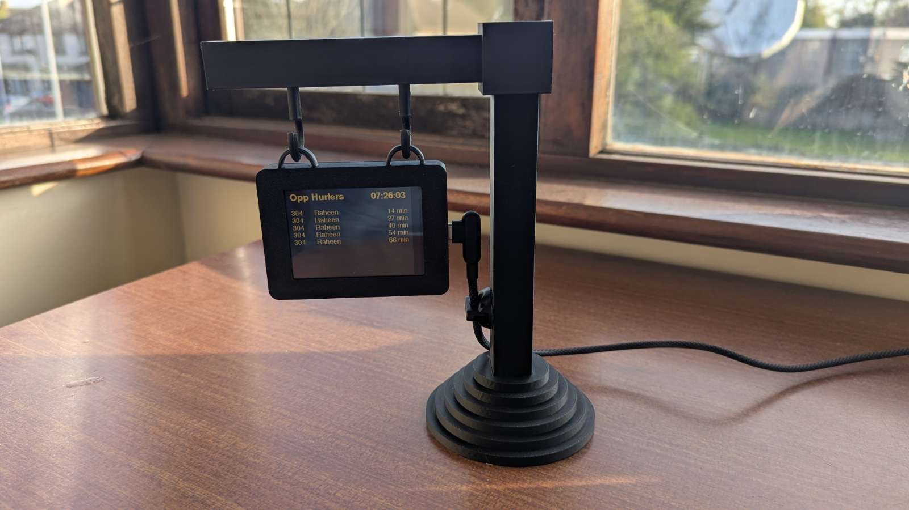

DeskStop
For this assignment, I was tasked with designing, modelling, and documenting a prototype device using an integrated touchscreen and ESP32 board. I decided to create a "Live Bus Tracker" which I later named DeskStop. The goal was to create a functional and aesthetically pleasing prototype that is minimal and doesn't take up too much desk space, while still being readable and usable. I focused on a bus stop inspired design for the casing.
Interactive 3D model of the DeskStop
Prototyping
The prototyping process began with low-fidelity cardboard models to test the design and functionality before moving to 3D modeling. The first cardboard prototype proved surprisingly functional, guiding the subsequent iterative designs.
Through cardboard prototyping, key design challenges were identified and addressed. For instance, an early prototype revealed that the cable port for the ESP32 was positioned incorrectly, leading to a cluttered appearance; this was rectified in later iterations. Additionally, initial tests confirmed that the touchscreen made one side of the bus stop sign too heavy for the base to stand upright, prompting the inclusion of inserts for craft weights in the 3D design to ensure stability. The loop system for attaching the case to the pole also underwent revision after encountering difficulties in its FreeCAD implementation.

First cardboard prototype

Second cardboard prototype
3D Modelling & Printing
The device was designed in FreeCAD, emphasising modularity and ease of assembly. The main components, the pole base, vertical pole, horizontal pole, case box, and case lid, were modeled with precision. Iterations during the 3D modeling phase included adjusting the base design from seven stacked circles for aesthetic reasons, reducing the vertical pole's height from 21 cm to 17.5 cm due to printer bed limitations, and correcting the orientation of the connecting hooks. Technical drawings were produced for each part to ensure precise manufacturing. They can be viewed at the start of the page.

Case Iterations
The parts were 3D printed using a Bambu Lab A1 mini printer with PLA Mage Charcoal filament for the final version, and Sunlu PLA Plus Filament in Blue Grey for prototyping. Early prints of the base and poles revealed minor errors, such as hole sizes for connections, which were subsequently corrected in the models. After printing, careful post-processing was required, including removing brims and supports. Craft weights were glued into the base to provide stability, addressing a crucial finding from the cardboard prototyping phase. The rest of the components were designed to snap together, allowing for easy assembly without additional adhesive.
Final Prototype & Assembly
The final prototype successfully achieves the initial design goals, being minimal, aesthetically pleasing, and functional. It occupies minimal desk space while offering clear readability and usability of the live bus information. The assembly process proved straightforward due to the thoughtful design of the interlocking parts and the inclusion of features like magnet enclosures and internal guides for the touchscreen.

Final Prototype